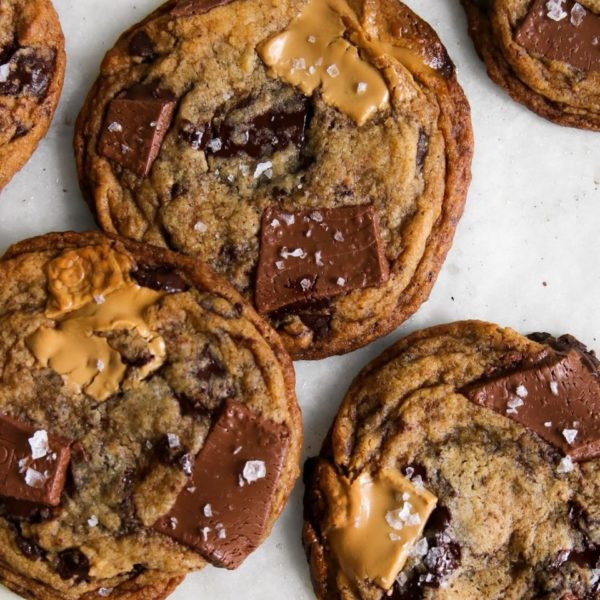

Chocolate Chip Cookie

Description
Today I am sharing a classic chocolate chip cookie with crispy edges, chewy centres, and large pools of chocolate.
This cookie dough is a really good canvas for whatever mix-ins or chocolates you like.
To get the largest chocolate ‘puddles,’ refrain from using chocolate chips and opt for a chocolate bar that you can coarsely chop up yourself.
Ingredients
- 1/2 cup + 2 tbsp unsalted butter, at room temperature
- 1/2 cup + 2 tbsp brown sugar
- 1/2 cup granulated sugar
- 1 large egg, at room temperature
- 2 tsp vanilla extract
- 1 3/4 cups + 2 tbsp all-purpose flour
- 3/4 tsp baking powder
- 1/2 tsp baking soda
- 1 tsp salt
- 2/3 cup coarsely chopped dark chocolate
- 2/3 cup coarsely chopped milk chocolate
- 1/3 cup coarsely chopped Dulcey chocolate, optional
Steps
- Preheat the oven to 350°F (177°C). Line a large baking sheet with parchment paper.
- In the bowl of a stand mixer fitted with a paddle attachment, cream the butter, brown sugar, and granulated sugar on medium speed until they are smooth, about 1 minute.
- Add the vanilla and egg to the butter mixture and mix on medium speed until they are fully incorporated, scraping down the sides of the bowl as needed.
- In a medium bowl, whisk together the flour, salt, baking powder, and baking soda. With the mixer on low speed, add the flour mixture in two batches to the butter mixture, and mix until the ingredients are just combined, about 1 minute.
- Separate the chopped chocolates into two portions; I like to reserve the larger pieces to top each cookie dough ball before baking. Add one portion of the chocolates to the bowl, and mix until they are just incorporated with the dough, about 30 seconds. Set second portion of chocolates aside.
- With a standard ice cream scoop, form 12 even balls of dough.
- Place filled dough balls about 2 inches (5 cm) apart on the baking sheet. Place several pieces of reserved chocolate onto each dough ball.
- Bake the cookies for 12 to 14 minutes, or until the cookies are browned and caramelized along the edges and the centres are just set. If you would like your cookies to have the crinkled edges, give the pan a few taps on the oven rack before you take them out of the oven.
- Allow the cookies to cool on the baking sheet for 5 minutes, then transfer them to a wire rack to cool completely.
Return to Home Page
Recipe Credits: Constellation Inspiration